LE 控制器
概述
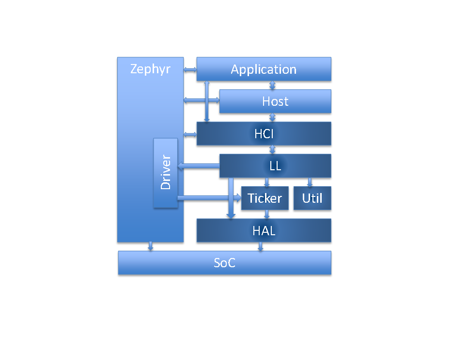
HCI
主机控制器接口，Bluetooth 标准
提供 Zephyr Bluetooth HCI 驱动
HAL
硬件抽象层
厂商特定实现，以及 Zephyr 驱动的使用
Ticker
软实时的无线电/资源调度
LL_SW
基于软件的链路层实现
状态和角色、控制过程、数据包控制器
Util
裸机内存池管理
数量可变的队列，无锁使用
数量固定的 FIFO，无锁使用
基于 Mayfly 概念的延迟 ISR 执行
架构
执行概述

架构概述
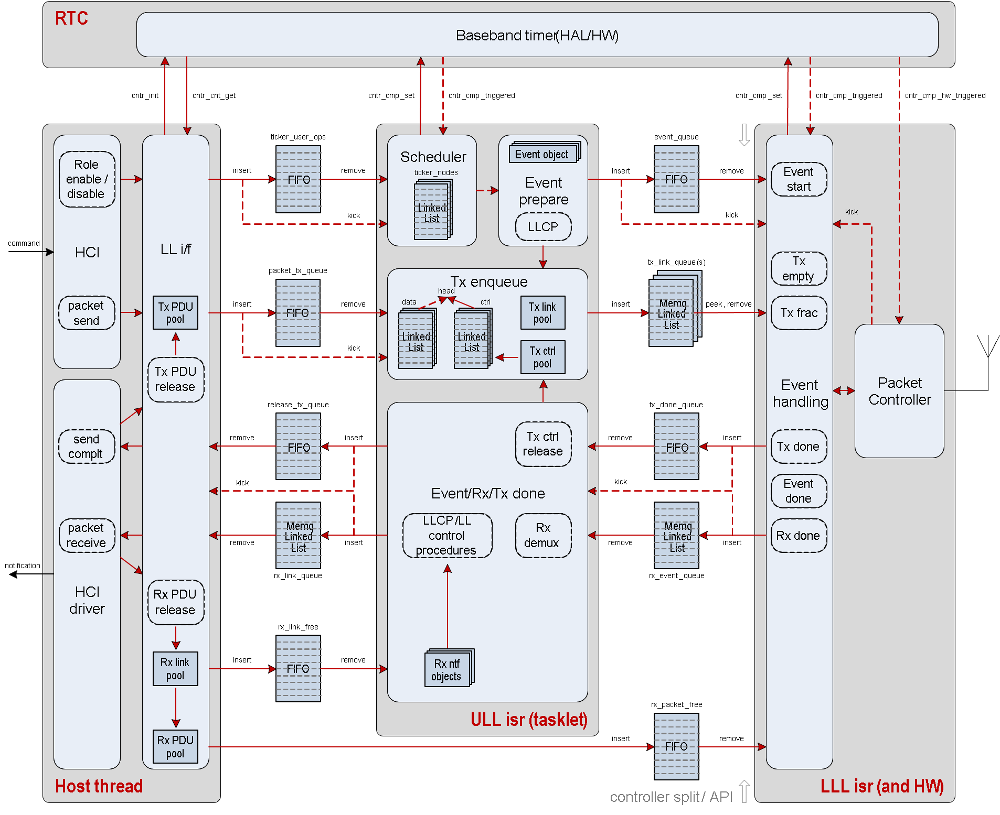
调度

Ticker
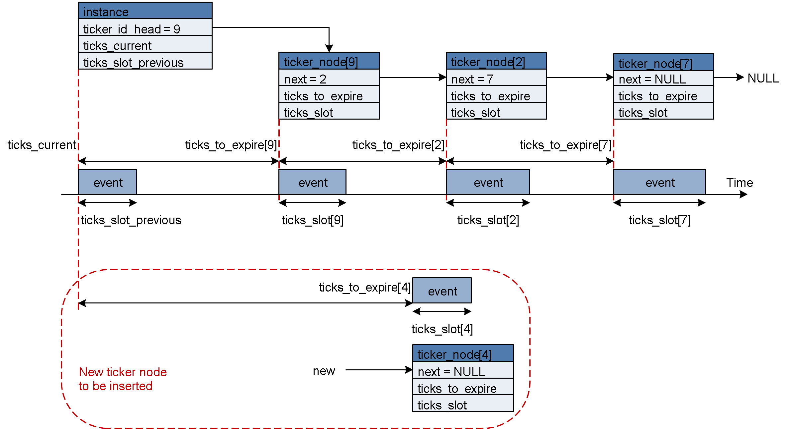
上层链路层和下层链路层

调度变体
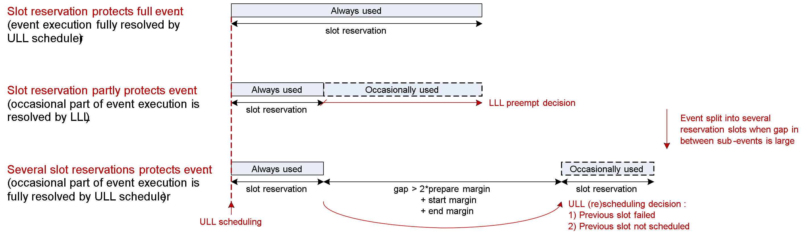
ULL 和 LLL 时序
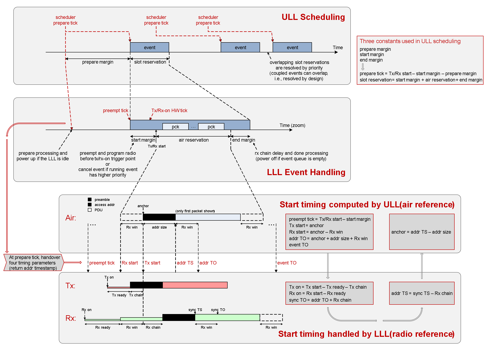
事件处理
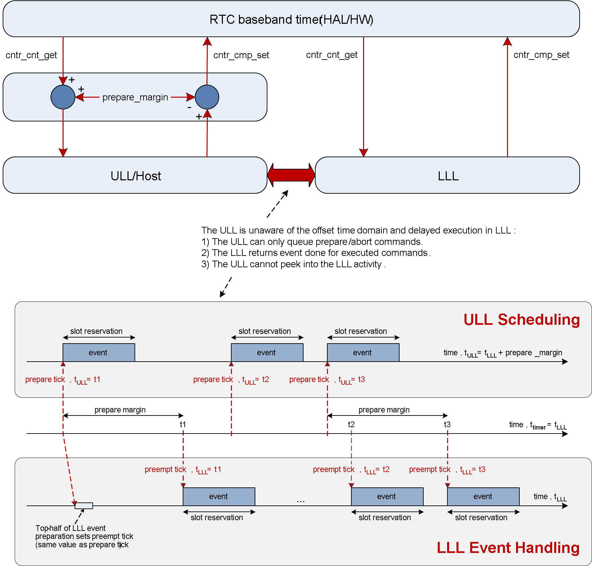
调度间隔很近的事件
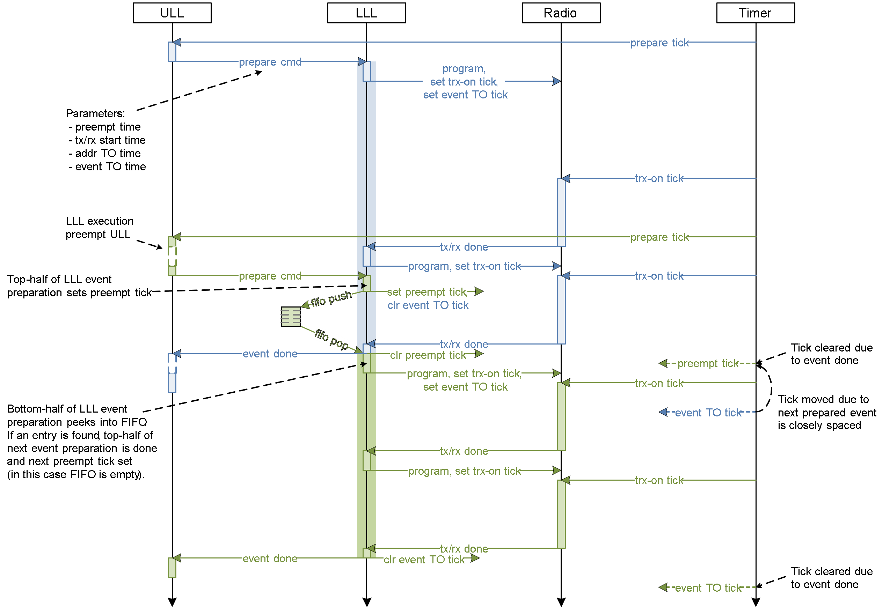
中止活动事件
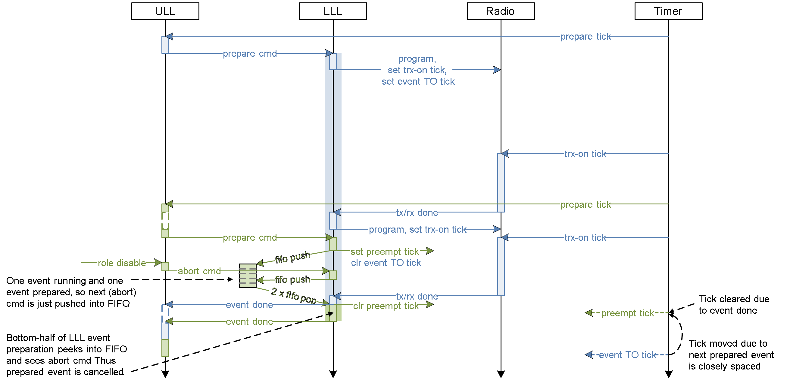
取消待处理事件
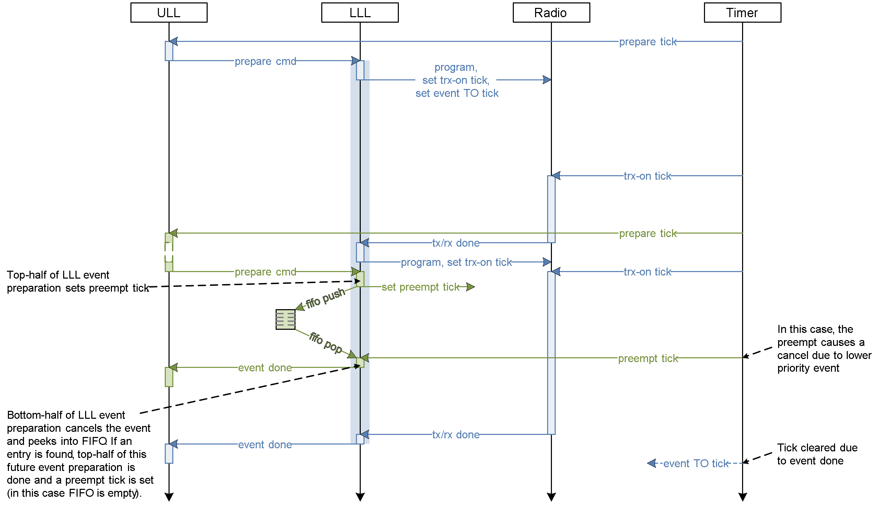
抢占活动事件

数据流
发送数据流

接收数据流
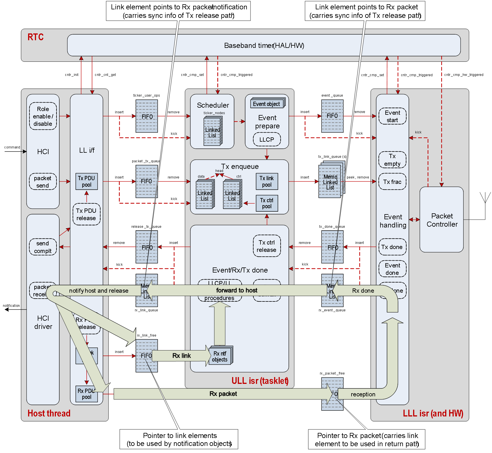
执行优先级

事件处理（0, 1）< 事件准备（2, 3）< 事件/接收完成（4）< 发送请求（5）< 角色管理（6）< 主机（7）。
LLL 是厂商 ISR，ULL 采用 Mayfly ISR 概念，主机是内核线程。
链路层控制过程
下面简要介绍 ULL 中控制过程处理实现的主要概念。
三个主要执行上下文
- HCI/LLCP API
其他过程的发起 API
来自 ull_llcp.c::ull_cp_<proc>()，用于发起本地过程
与正在运行的本地和远端过程交互的接口
- lll_prepare 上下文，驱动 ull_cp_run()
LLCP 主状态机入口/节拍驱动（tick'er）
来自 ull_peripheral.c/ull_central.c::ticker_cb，经由 ull_conn_llcp()
- rx_demux 上下文，驱动 ull_cp_tx_ack() 和 ull_cp_rx()
LLCP 发送确认处理和 PDU 接收
来自 ull_conn.c::ull_conn_rx()
负责将 PDU 传入正在运行的过程，并可能发起远端过程
数据结构和 PDU 辅助函数
- struct llcp_struct
主 LLCP 数据存储
定义在 ull_conn_types.h 中，并作为 struct ll_conn 的一部分声明
保存本地和远端过程请求队列以及特定于连接的 LLCP 数据
基本的连接级抽象
- struct proc_ctx
通用过程上下文数据，包含各种过程数据和状态，以及用于排队的 sys_snode_t
定义在 ull_llcp_internal.h 中，通过 ull_llcp.c::create_procedure() 声明/实例化
还保存 tx_ack 中使用的节点引用以及 rx_node 保留机制
- struct llcp_mem_pool
用于实现过程上下文资源的内存池，分别实例化了本地版本和远端版本
通过 ull_llcp.c::create_procedure() 使用
- 各种 PDU 处理技巧
控制 PDU 的编码和解码由 ull_llcp_pdu.c::llcp_pdu_encode/decode_<PDU>() 完成
各种 PDU 校验由 ull_llcp.c::pdu_validate_<PDU>() 经由 ull_llcp.c::pdu_is_valid() 处理
LLCP 本地和远端请求/过程状态机
- ull_llcp_local.c
处理本地发起过程的状态机
命名约定：lr _<...> => 本地请求状态机
本地过程队列处理
本地 run/rx/tx_ack 分发
- ull_llcp_remote.c
上述内容的远端版本
命名约定：rr_<...> => 远端请求状态机
还通过 llcp_rx_new() 处理远端过程的发起
各种过程冲突处理（在 rr_st_idle() 中）
- ull_llcp_common/conn_upd/phy/enc/cc/chmu.c
各个过程的具体实现（较简单的过程集中在 ull_llcp_common.c 中）
命名约定：lp_<...> => 本地发起的过程，rp_<...> => 远端发起的过程
处理过程从发起（可能经过 instant）到完成的流程，以及在适用时通知主机
其他概念
- 过程冲突处理
详见 BT 规范中的说明
基本上，有些过程可以并行存在，有些则不能。例如，同一时间只能有一个基于 instant 的过程
规范规定了冲突发生时如何处理/解决的规则
- 终止处理
关于如何处理终止，有特定的规则。
由于过程上下文存在资源管理，而终止过程必须始终可用，因此将其作为特殊情况处理
另请注意，在多种情况下，对端的无效行为会触发连接终止
- 新远端过程处理
表 new_proc_lut[] 将 LLCP PDU 映射到 llcp_rr_new() 中使用的过程/角色
注意：对于任意给定连接，远端过程队列中始终只能有一个远端过程
- 其他细节
暂停/恢复概念有两种（详见规范）
过程执行可以被加密过程暂停
数据发送可以被 PHY、DLE 和 ENC 过程暂停
RX 节点保留：确保在需要发送通知时无需等待分配 RX 节点
其他单元测试概念
- 每个过程都有单独的 ZTEST 单元测试
zephyr/tests/bluetooth/controller/ctrl_<proc>
- RX 节点处理采用模拟（mock）实现
不同的配置由单独的 conf 文件处理（例如参见 ctrl_conn_update）
ZTEST(periph_rem_no_param_req, test_conn_update_periph_rem_accept_no_param_req)
- 单元测试中使用 rx_demux/prepare 上下文的仿真版本，仅测试过程的 PDU 流
event_prepare()/event_done() 辅助函数模拟 LLL 的 prepare/done 流程
lt_rx()/lt_tx() 是 rx/tx 的“下层测试器（lower tester）”仿真
ut_rx_node() 是通知流处理的“上层测试器（upper tester）”仿真
一组用于生成和解析 PDU 的辅助函数，以及各种模拟的 ull_stuff()
下层链路层
LLL 执行

LLL 恢复

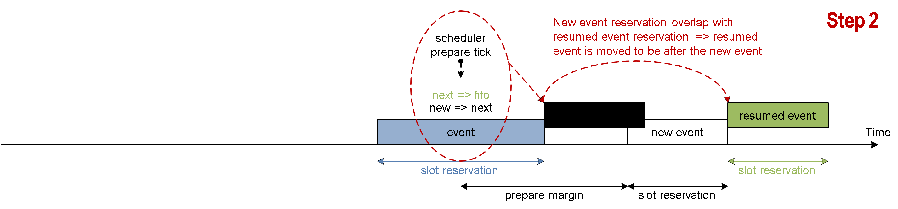
裸机工具
内存 FIFO 和内存队列

Mayfly
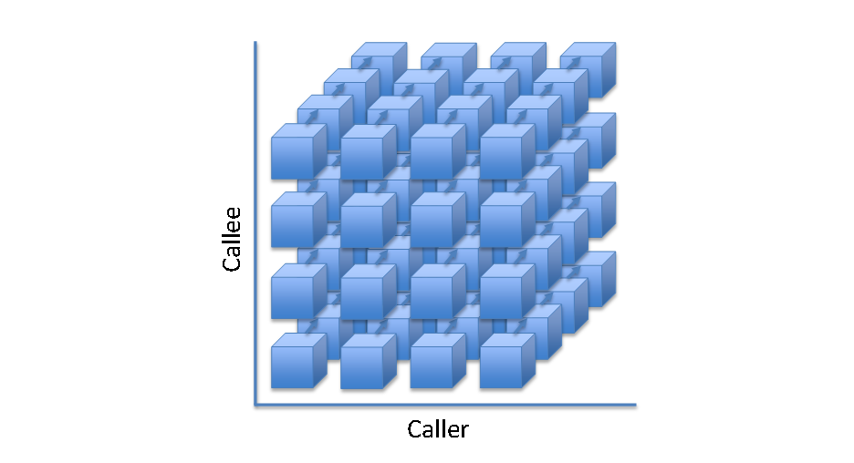
Mayfly 是多实例、可扩展的 ISR 执行上下文
Mayfly 之于 ISR，正如工作项之于线程
在 ISR 中执行的函数列表
执行优先级映射到 IRQ 优先级
便于跨执行上下文调度
尽快完成后进入空闲（race-to-idle）的执行方式
无锁、裸机
旧版控制器
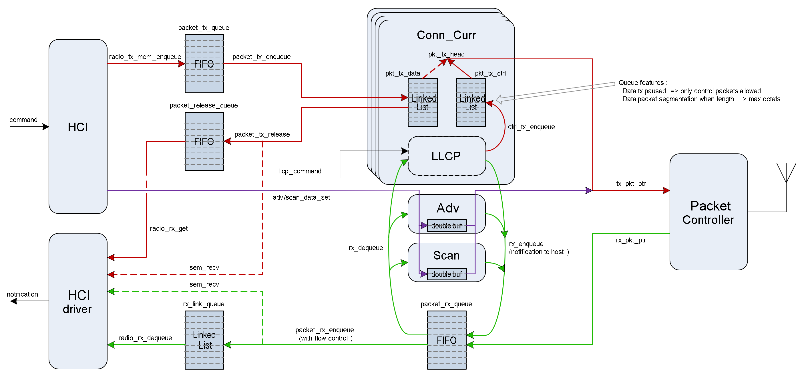
Bluetooth Low Energy 控制器：厂商特定细节
硬件要求
Nordic Semiconductor
Nordic Semiconductor 的 Bluetooth Low Energy 控制器实现需要以下硬件外设。
资源 |
nRF 外设 |
实例数 |
Zephyr 驱动可访问 |
描述 |
|---|---|---|---|---|
时钟 |
NRF_CLOCK |
1 |
是 |
|
RTC [a] |
NRF_RTC0 |
1 |
否 |
|
定时器 |
2 或 1 [1] |
否 |
|
|
PPI [b] |
NRF_PPI |
是 [4] |
|
|
DPPI [c] |
NRF_DPPI |
20 个通道，以及 2 个通道组 [3] |
是 [4] |
|
SWI [d] |
NRF_SWI4 和 NRF_SWI5，或 NRF_SWI2 和 NRF_SWI3 [5] |
2 |
否 |
|
无线电 |
NRF_RADIO |
1 |
否 |
|
RNG [e] |
NRF_RNG |
1 |
是 |
|
ECB [f] |
NRF_ECB |
1 |
否 |
|
CBC-CCM [g] |
NRF_CCM |
1 |
否 |
|
AAR [h] |
NRF_AAR |
1 |
否 |
|
GPIO [i] |
NRF_GPIO |
2 个 GPIO 引脚，PA 和 LNA 各 1 个 |
是 |
|
GPIOTE [j] |
NRF_GPIOTE |
1 |
是 |
|
TEMP [k] |
NRF_TEMP |
1 |
是 |
|
UART [l] |
NRF_UART0 |
1 |
是 |
|
IPC [m] |
NRF_IPC [5] |
1 |
是 |
|